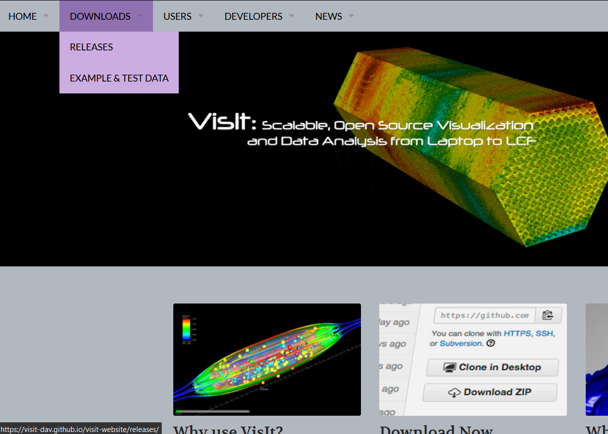
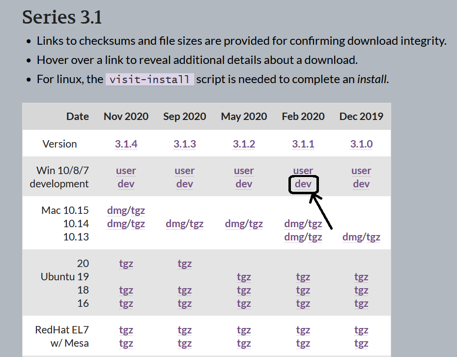
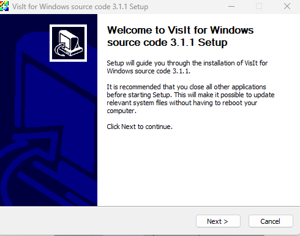
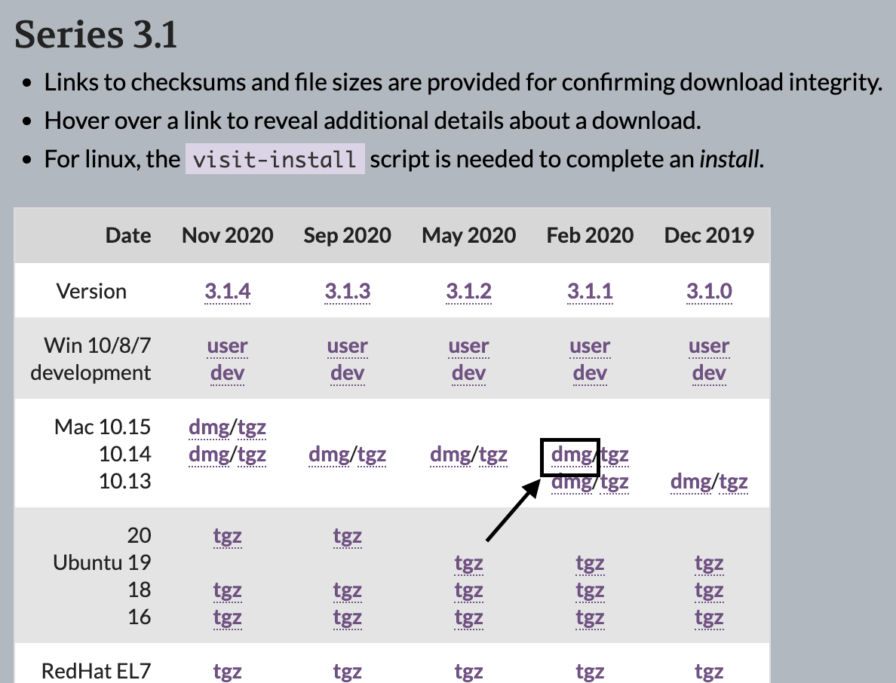
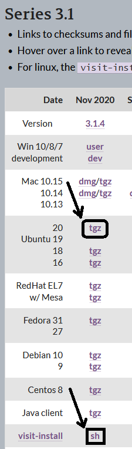

Requirements and Feasibility
VisIt is a comprehensive visualization tool designed to handle extremely large datasets in a parallelized and distributed manner that is highly adaptable to any computer system. Its client-server architecture enables remote visualization, while its plugin-based system allows for customization and extension. With support for various operating systems and high-performance computing environments, VisIt is a powerful tool for visualizing complex datasets in diverse scientific and engineering fields. Its robust design, extensive set of features, and ongoing community support make it a feasible solution for large-scale data analysis and visualization, making it essential for the numerical relativity visualization workflow.
For the visualizations we will walk through in this primer, a personal computer should be more than enough, however it is important to consider the system requirements to run VisIT across all computing platforms. The following are the key features to note about system requirements:
- Operating Systems: VisIt is cross-platform, supporting Windows, macOS, and many UNIX variants like UbuntuOS, TOSS OS, Redhat OS, AIX, IRIX, Solaris, and Tru64. Its adaptability also extends to various high-performance computing environments such as SGI's Altix, Cray's XT4, and many commodity clusters.
- Parallelization:VisIt's core design is based on a client-server architecture, with the server being parallelized. This parallelized server is crucial for processing large datasets interactively and enables remote visualization capabilities.
- Hardware: Given its focus on large-scale data processing, VisIt can leverage high-performance hardware configurations, such as supercomputers and clusters. For instance, it has been used to visualize datasets comprising billions of points, making it ideal for high-end hardware setups.
VisIt’s feasibility largely depends on its ability to handle vast datasets in a parallelized, distributed manner. Key aspects that contribute to its feasibility include:
- Robust Design: VisIt has been designed with a significant investment in software development, totaling over one and a half million lines of code. The inclusion of third-party libraries like Qt (for its user interface), Python (for scripting), and VTK (for visualization algorithms) contributes to its robustness.
- Client-Server Model:The client-server architecture allows users to perform remote visualization, reducing the need to transfer large datasets across networks. This model enhances feasibility by enabling efficient utilization of computing resources.
- Plugin Architecture:VisIt’s plugin-based system allows for easy extension and customization, facilitating the addition of new plots, operators, and file format readers. This flexibility makes it adaptable to various user needs and data types.
- Compatibility and Adaptability: VisIt has been used for a wide range of applications, from visualizing structured and unstructured grids to adaptive refinement meshes and particle simulations. Its flexibility and extensive library of plots, operators, and queries make it suitable for our visualization needs.
- Community and Development:VisIt's development is supported by a robust community, with contributions from multiple organizations and universities. The ongoing development by 25 developers from DOE Laboratories and other institutions ensures continuous improvements and updates.
 Figure 1: VisIt website binary releases
VisIt releases different versions of the software that can be installed on a local machine using binaries. These binaries are packaged code that includes an executable installer. The user can follow the installer’s prompts to set up VisIt on their machine. Across this manual, we will be using VisIt 3.1.1, however, any version of VisIt 3 should work. The binary installers corresponding to different releases of VisIt for different operating systems can be found on the releases page:
For instructions on how to install VisIt, navigate to section corresponding to the appropriate operating system: Windows (), Mac (), or Linux ()
Installation on Windows
Scrolling down on the VisIt releases page, we can find the VisIt Series 3.1 binaries releases table (Fig. 2). The binary release that we are interested in using would be the VisIt 3.1.1 “Win 10/8/7 development” dev release, as it provides greater flexibility and maneuverability within the code for the users. At this point, it is a matter of downloading this file onto the local windows machine and launching the binary executable. Given all of these steps were run correctly, we should be met with an installation prompt, which should install VisIt 3.1.1 onto the windows system as seen within Fig.
 Figure 2: VisIt 3.1 Series Binaries

Figure 3: Windows Installation Prompt
Installation on Mac
On the releases page, scroll down to find VisIt version 3.1.1, which is the version we will be using throughout this manual. Find the row corresponding to Mac OS and the column corresponding to VisIt 3.1.1 and click the Mac 10.14 dmg download, as shown in Fig
After downloading the dmg, double click the download. A window should open with the VisIt application and the applications folder. Drag the VisIt icon to the applications folder, after which a progress bar will appear. When this progress bar is complete, you have successfully installed VisIt on Mac OS.
 Figure 4: VisIt 3.1.1 Mac OS download
Installation on Linux
The VisIt installation process on Linux is somewhat more involved than the previous Windows and MacOS installations, but it is not overly complicated. On the releases page, the VisIt installation executables are found in the VisIt Series 3.1 Installation section. For the Linux installation process, we will be downloading the VisIt-install script and the VisIt .tgz file, which contains the instructions and the packaged code to install VisIt onto our system. Although the process described within this tutorial can be extrapolated to any of the listed Linux distributions and VisIt versions, only certain Linux distributions are supported with a given VisIt version. The VisIt functionality differs only slightly between releases since VisIt usually implements a few different features or changes across each release.
In this section, we will be installing VisIt 3.1.4 onto an Ubuntu 20.04 system. The User variable represents the user account of the Linux system that the VisIt software have been downloaded in. After downloading the VisIt-install script and the corresponding .tgz file shown in Fig. 5, we first move these files into the same directory. To ensure that the scripts are correctly initialized as an executable, we run the following command.
chmod +x VisIt-install
Before we run the script, we need to rename the .tgz file since the script expects a certain file name. This is done with the following command
mv VisIt3_1_4.linux-x86_64-ubuntu20.tar.gz VisIt3_1_4.linux-x86_64.tar.gz
Finally, we can run the installtion script.
./VisIt-install [version] [platform] [directory]
The ./VisIt-install part of the command executes the VisIt-install bash script. The following parts of the command in square brackets are arguments. The version argument determines what version of VisIt will be installed on the local machine which in our case is 3.1.4. The platform argument is dependent on the type of system we are installing VisIt onto. The three potential values for this argument are linux-86_64, linux, and darwin. The correct argument can be found in the name of the .tgz file. In this case, the platform is linux-x86_64. If one platform argument does not work, try the other two. There is no consequence for choosing the wrong platform type since the installation script will not work for the wrong argument. Lastly, the directory argument is the location in which we wish to install VisIt. This can be anywhere on the machine, however the /user/src is typically the location of locally installed software on Linux systems, which is where we will be installing VisIt.

Figure 5: VisIt 3.1.4 Linux Installation
Putting all of this together, the command we run is:
./VisIt-install 3.1.4 linux-x86_64 /usr/local/VisIt
Next, we will be prompted to choose a network configuration, which is a setting that allows VisIt to connect different computers together through a common client-server. For our purposes, this is not important so we choose the No Network configuration setting and proceed with the installation. After some time, Visit will have been successfully installed. In order to open VisIt, we run the newly installed executable.
/usr/local/VisIt/bin/VisIt
For ease of use, it is recommended that Linux users add VisIt to their $PATH environment, which can allow the user to run the VisIt executable without entering the directory it is located in. This can be done by simply adding
export PATH=$PATH:/usr/local/VisIt/bin
to the end of the ∼/.bashrc file. To open VisIt, we now only need to enter in visit within the terminal.